Computational Stylistics
in Action
From Research Infrastructures to DIY Tools
마체이 에델
Polish Academy of Sciences & University of Tartu
29/07/2026
https://tinyurl.com/jcls2025
slides on github!!!
introduction
[T]he 2026 Antonio Zampolli Prize was awarded to the stylo tool and the Computational Stylistics Group for their transformative impact on our field through the development and dissemination of stylo […]. Beyond the software, the prize also recognizes the group’s sustained efforts in community-building through workshops, open-source development, interdisciplinary collaborations, and training initiatives that have empowered a new generation of digital humanists.
(ADHO Award Committee)
Krakow, Poland
Computational Stylistics Group
computational stylistics
66 English Victorian novels

Text analysis: two approaches
- focusing on the content
- what my corpus is about?
- how to “read” through a large library
- approaches: topic modeling, keywords analysis
- focusing on stylistic similarities 👈
- why my texts form groups?
- how to detect different stylistics “signals”
- approaches: multivariate text classification methods
Theoretical foundations
- “Computation into criticism” (John Burrows)
- “Algorithmic criticism” (Steve Ramsay)
- “Distant reading” (Franco Moretti)
- “Macroanalysis” (Matt Jockers)
- “Riddle of literary quality” (Karina van Dalen-Oskam)
Fictional characters’ voices
A beginning of a good friendship
- Artjoms Šeļa
- Ben Nagy
- Joanna Byszuk
- Laura Hernández-Lorenzo
- Botond Szemes
- Maciej Eder
Šeļa, A., Nagy, B., Byszuk, J., Hernández-Lorenzo, L., Szemes, B. and Eder, M. (2024). From stage to page: language independent bootstrap measures of distinctiveness in fictional speech. https://arxiv.org/abs/2301.05659
Fictional characters: why bother?
- Computation into criticism (John Burrows)
- researched Jane Austen’s characters
- Can a good author differentiate voices?
- Are there any overall trends?
- Do distinctive fictional voices mimic some general sociolinguistic phenomena?
Assumptions
- Authorship attribution methods to distinguish characters
- Telling apart particular characters should be doable in plays
- Corpus used: DraCor
- Shakespeare (37 plays)
- Russian drama (212 plays)
- French drama (1560 plays)
- German drama (592 plays)
DraCor
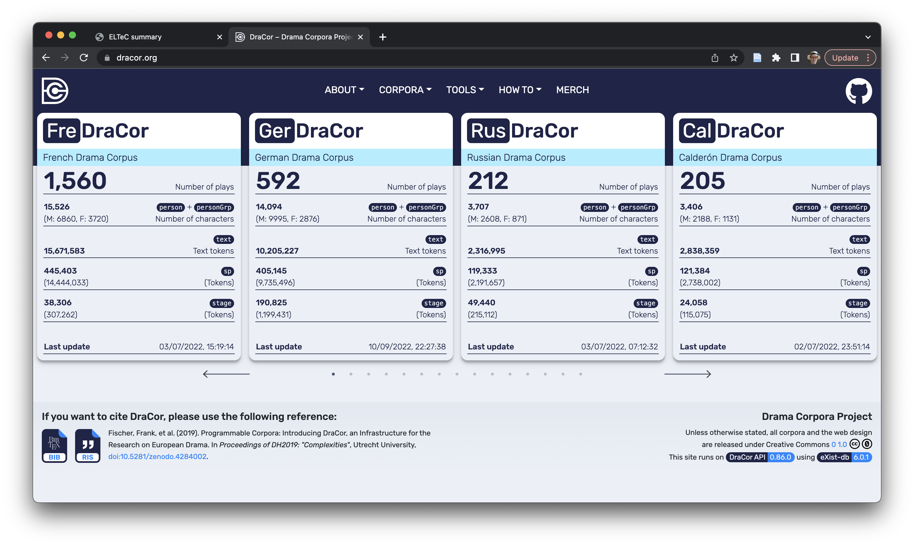
Strong idiolects (women)
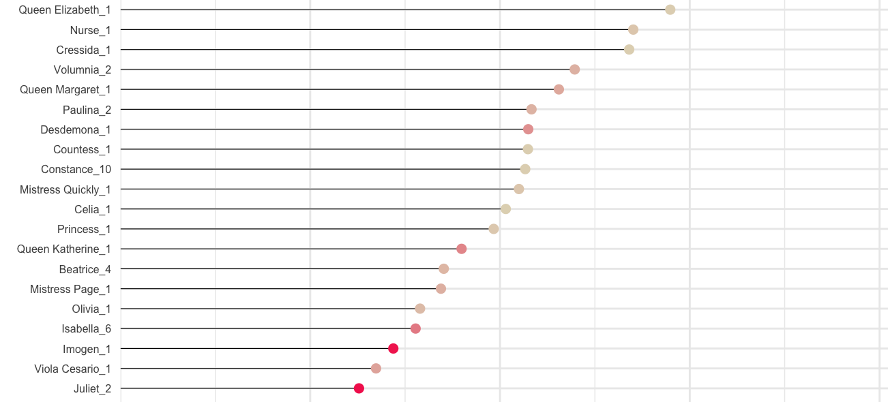
Strong idiolect (men)
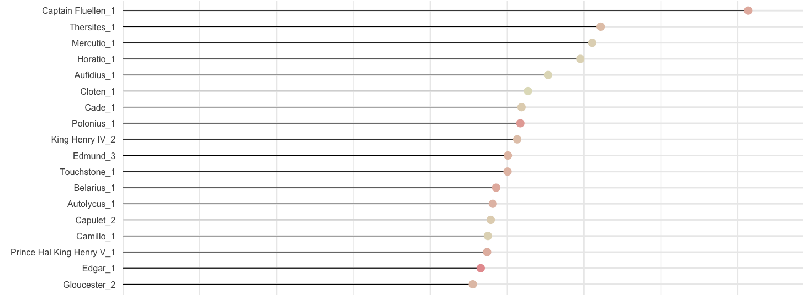
Weak idiolect (men)
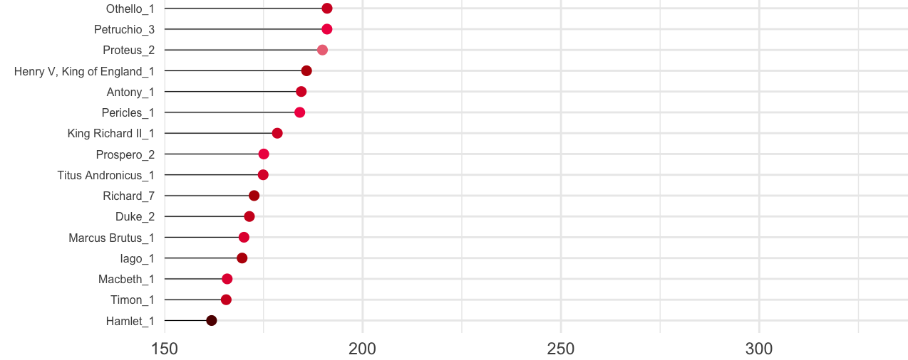
Preliminary results
- Female characters more distinguishable than males
- Secondary characters more distinguishable than protagonists
Shakespeare and Russian plays
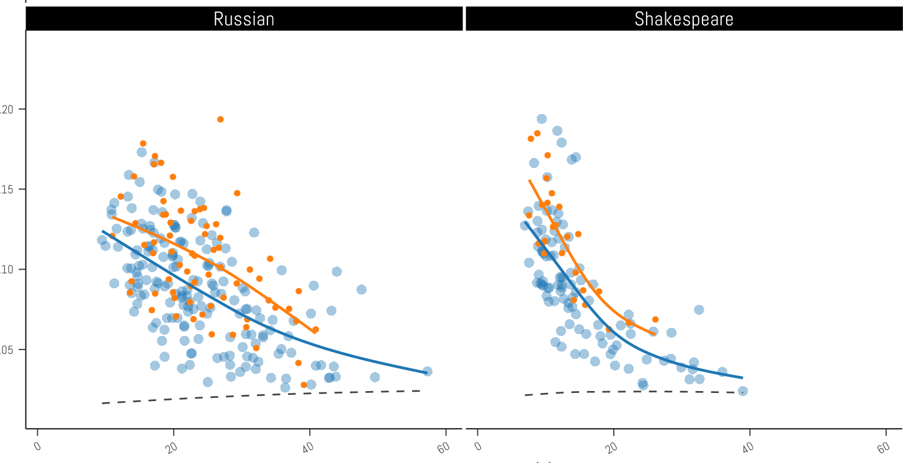
French plays, German plays
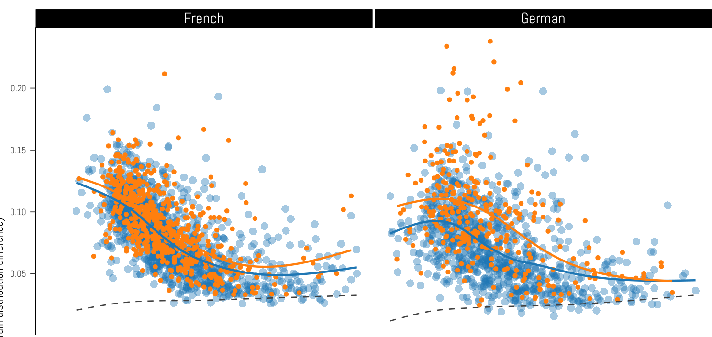
Further observations
- Female characters distinguishable…
- … despite the language and epoch
- Because the authors were almost exclusively male?
| fem. | masc. |
|---|---|
| vous | diable |
| époux | la |
| mère | ami |
| amant | les |
| mari | parbleu |
| tante | maître |
| hélas | morbleu |
| coeur | des |
| rivale | amis |
| ne | morgué |
| … | … |
| fem. | masc. |
|---|---|
| ach | der |
| o | die |
| du | teufel |
| vater | und |
| mutter | ein |
| er | des |
| mich | in |
| liebe | den |
| mama | kerl |
| papa | kaiser |
| … | … |
| fem. | masc. |
|---|---|
| husband | the |
| you | of |
| alas | this |
| love | sir |
| husbands | and |
| me | we |
| romeo | king |
| lysander | our |
| willow | their |
| pisanio | duke |
| … | … |
| fem. | masc. |
|---|---|
| vous | diable |
| époux | la |
| mère | ami |
| amant | les |
| mari | parbleu |
| tante | maître |
| hélas | morbleu |
| coeur | des |
| rivale | amis |
| ne | morgué |
| … | … |
| fem. | masc. |
|---|---|
| ach | der |
| o | die |
| du | teufel |
| vater | und |
| mutter | ein |
| er | des |
| mich | in |
| liebe | den |
| mama | kerl |
| papa | kaiser |
| … | … |
| fem. | masc. |
|---|---|
| husband | the |
| you | of |
| alas | this |
| love | sir |
| husbands | and |
| me | we |
| romeo | king |
| lysander | our |
| willow | their |
| pisanio | duke |
| … | … |
| fem. | masc. |
|---|---|
| vous | diable |
| époux | la |
| mère | ami |
| amant | les |
| mari | parbleu |
| tante | maître |
| hélas | morbleu |
| coeur | des |
| rivale | amis |
| ne | morgué |
| … | … |
| fem. | masc. |
|---|---|
| ach | der |
| o | die |
| du | teufel |
| vater | und |
| mutter | ein |
| er | des |
| mich | in |
| liebe | den |
| mama | kerl |
| papa | kaiser |
| … | … |
| fem. | masc. |
|---|---|
| husband | the |
| you | of |
| alas | this |
| love | sir |
| husbands | and |
| me | we |
| romeo | king |
| lysander | our |
| willow | their |
| pisanio | duke |
| … | … |
more examples
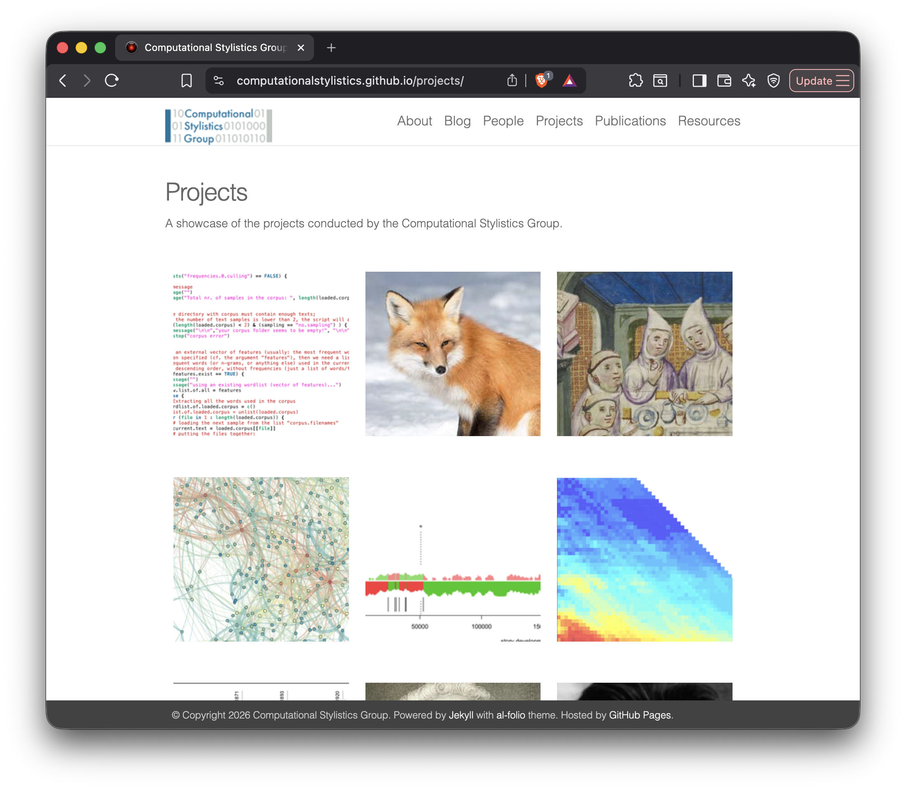
infrastructures in DH
ELTeC corpus

DraCor programmable corpora

beyond language resources
TEI markup
<sp xml:id="sp-0527" who="#Romeo_Rom">
<speaker xml:id="spk-0527">ROMEO </speaker>
<l xml:id="ftln-0527" n="1.4.45" part="I">Nay, that’s not so. </l>
</sp>
<sp xml:id="sp-0528" who="#Mercutio_Rom">
<speaker xml:id="spk-0528">MERCUTIO </speaker>
<l xml:id="ftln-0528" n="1.4.46" part="F">I mean, sir, in delay </l>
<l xml:id="ftln-0529" n="1.4.47">We waste our lights; in vain, light lights by day. </l>
<l xml:id="ftln-0530" n="1.4.48">Take our good meaning, for our judgment sits </l>
<l xml:id="ftln-0531" n="1.4.49">Five times in that ere once in our five wits. </l>
</sp>
<sp xml:id="sp-0532" who="#Romeo_Rom">
<speaker xml:id="spk-0532">ROMEO </speaker>
<l xml:id="ftln-0532" n="1.4.50">And we mean well in going to this masque, </l>
<l xml:id="ftln-0533" n="1.4.51" part="I">But ’tis no wit to go. </l>
</sp>
<sp xml:id="sp-0534" who="#Mercutio_Rom">
<speaker xml:id="spk-0534">MERCUTIO </speaker>
<l xml:id="ftln-0534" n="1.4.52" part="F">Why, may one ask? </l>
</sp>
<sp xml:id="sp-0535" who="#Romeo_Rom">
<speaker xml:id="spk-0535">ROMEO </speaker>
<l xml:id="ftln-0535" n="1.4.53" part="I">I dreamt a dream tonight. </l>
</sp>Voyant Tools
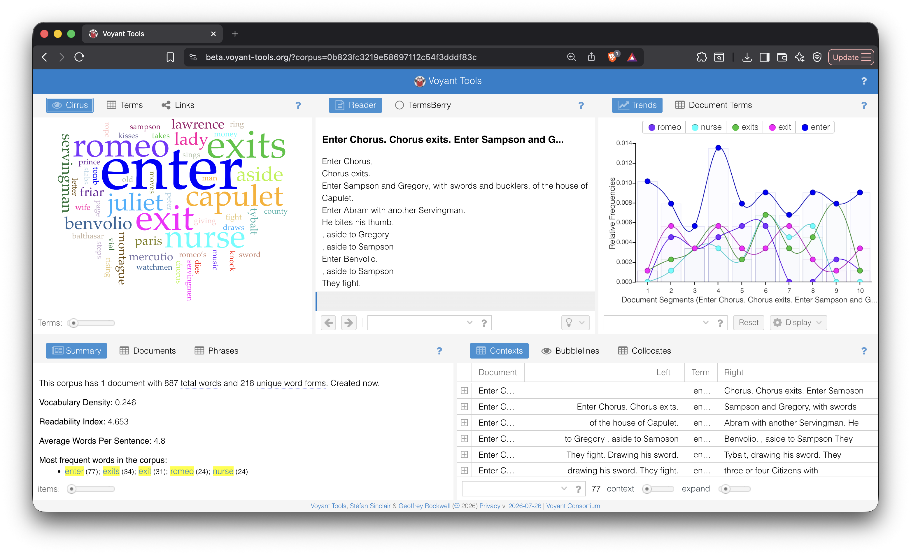
The grammar of DH
- programming languages
- Python
- R
- HTML, XML
- . . .
- interoperable standards
- TEI [👉 Zampolli Prize 2017]
- Linked Open Data
- IIIF
- . . .
The grammar of DH (cont.)
- methods
- topic modeling
- network analysis
- NLP techniques
- . . .
- tools
- Voyant Tools [👉 Zampolli Prize 2022]
- Transkribus
- Zotero
- Distant Viewing Explorer
- Stylo [👉 Zampolli Prize 2026]
- . . .
The grammar of DH (cont.)
- teaching environments
- ESU
- DHSI [👉 Zampolli Prize 2014]
- Programming Historian
- Dariah Campus
- . . .
- funding agencies
- SSHRC [👉 Zampolli Prize 2011]
- NEH [👉 Busa Prize 2016]
- ERC
- NCN, FWO, NWO, DFG, ETAG, NRF Korea, JSF, …
- . . .
stylo: a package for text analysis
- an R package
- written in R and run in R
- simple (entry level)
- fast
- offers a few extensions
- runs in command-line mode,
- however, requires only three lines of code
- no programming skills needed!
How to run stylo
Graphical User Interface (GUI)

set your parameters

Hierarchical cluster analysis
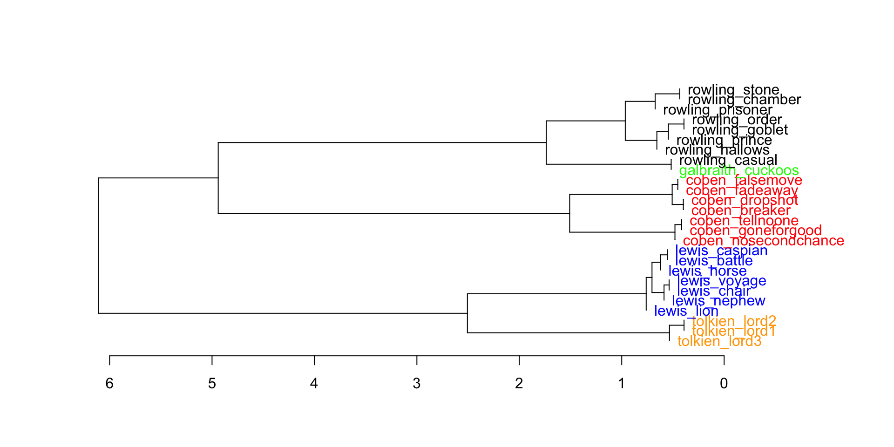
Bootstrap consensus tree
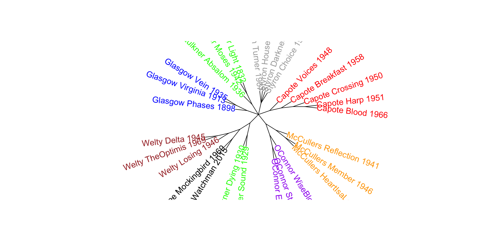
GitHub & documentation
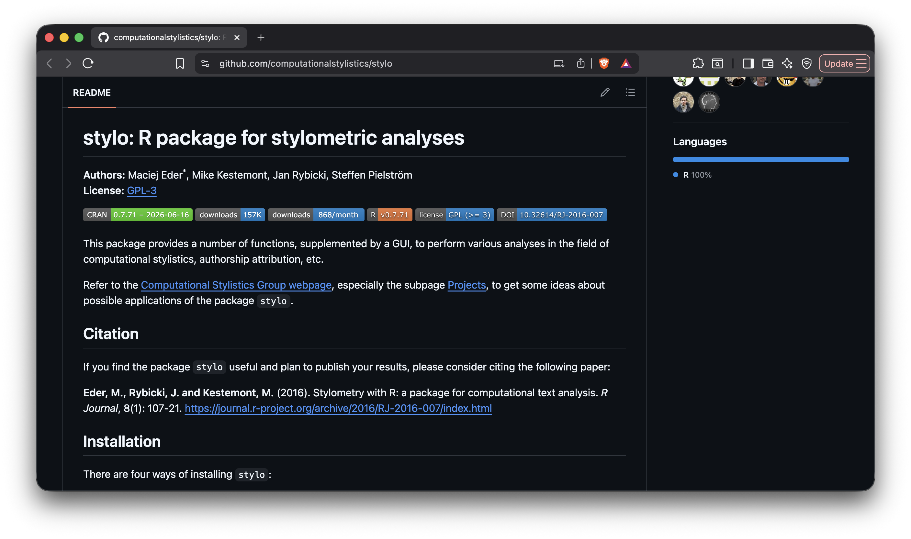
Teaching environments
ESU 2017
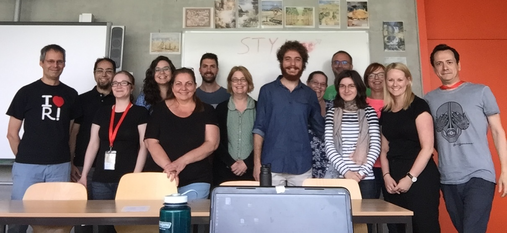
Survey of methods

Dariah Campus
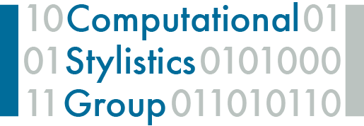